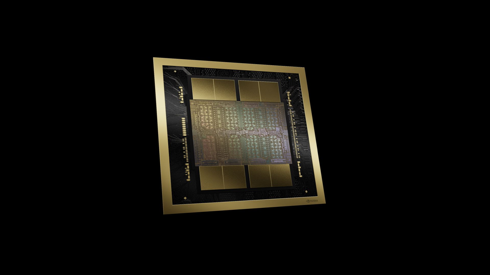

Гильдия сжатия данных живёт по заветам Мэтта Махони: его Large Text Compression Benchmark идёт уже больше двадцати лет, а сам Махони давно утверждал, что сжатие — это интеллект в чистом виде. Цюрихская лаборатория Tufa Labs, засветившаяся в соревнованиях ARC-AGI, подбросила в дискуссию сильный аргумент: её программа tufazip сжала один гигабайт английской Википедии (классический тестовый файл enwik9) до 105 388 353 байт — 105,39 МБ — без единого потерянного бита. В общем зачёте бенчмарка это второе место на момент подачи заявки, а главное — лучший результат среди записей, где нейросеть работает единственной предсказывающей моделью, без «мешанки» с классическими кодексами.
Сердце tufazip — 12-слойный трансформёр на 163 миллиона параметров, причём стартует он с небольшой офлайн-модели на 34 млн параметров, сжатой до 4,33 МБ. Дальше происходит фокус: два офлайн-обученных слоя копируются в двенадцать независимых слоёв, которые продолжают дообучаться прямо в процессе сжатия файла. Декодер проигрывает тот же процесс обучения на своей стороне — поэтому доученные веса никто не пересылает, и итоговый артефакт вместе с начальными весами и декодером укладывается в те самые 105 МБ.
Математика здесь изящная: если модель выдаёт токену вероятность p, идеальный код стоит ровно минус log2 от p бит. Сумма логарифмических потерь — это и есть идеальная длина сжатого файла, а арифметическое кодирование превращает предсказание в практичный сжиматель. Знакомые тезисы «языковое моделирование — это сжатие» (Delétang и коллеги, 2023) и «сжатие линейно отражает интеллект» (Huang и коллеги, 2024) в работе Tufa Labs работают как инженерная инструкция, а не лозунг.
За рекорд приходится платить мускулами: по подсчётам Tom's Hardware, сжатие или распаковка гигабайта занимают около недели на двух флагманских GPU NVIDIA B200. Так что tufazip — не замена архиватору в кармане, а демонстрация верхней границы нейросетевого подхода: модель, которая лучше предсказывает текст, буквально умеет экономить биты. Код открыт под лицензией MIT — можно повторять, улучшать и спорить.
Красивый урок здесь простой: старые инженерные соревнования, идущие десятилетиями, по-прежнему остаются площадкой, где маленькая лаборатория громит гигантов одной элегантной идеей — научись предсказывать, и файлы сожмутся сами.